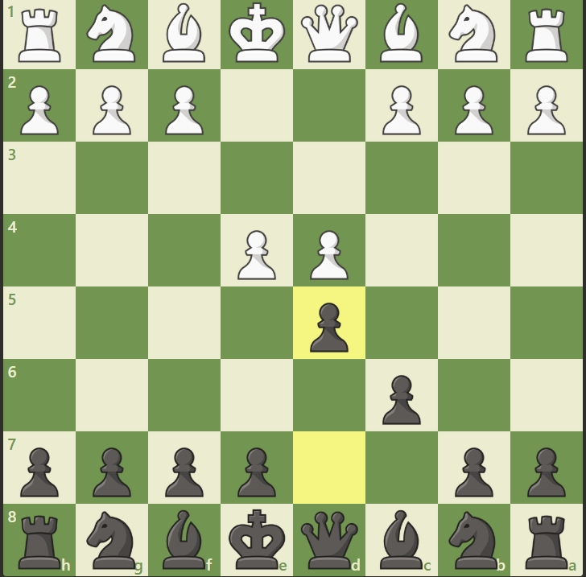

Overview
The Caro-Kann Defence is a solid and resilient response to 1.e4, beginning with:
1. e4 c6 2. d4 d5
Black aims to challenge the center without weakening their pawn structure. Known for its durability and strategic richness, the Caro-Kann has been favored by world champions like Karpov and Petrosian.
Opening Diagram
This position arises after 1.e4 c6 2.d4 d5. Black prepares to exchange central pawns and develop pieces behind a solid structure.
Main Variations
- Classical Variation: 3.Nc3 or 3.Nd2 followed by 4.e5 – leads to rich positional play.
- Advance Variation: 3.e5 – White grabs space, Black counters with c5 and Bf5.
- Panov-Botvinnik Attack: 3.exd5 cxd5 4.c4 – White targets the isolated d5 pawn.
Strategic Themes
The Caro-Kann Defence emphasizes:
- Solid pawn structure and long-term durability
- Safe king positioning and flexible development
- Counterattacking chances in the middlegame
- Balanced play suitable for all rating levels